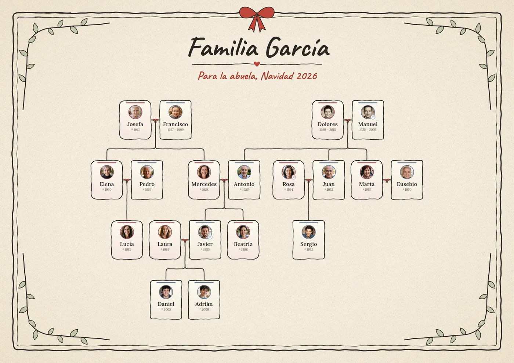

Un árbol genealógico como regalo de Navidad
Pocos regalos emocionan tanto a unos abuelos como ver a toda su familia junta, con fotos, en un cuadro. Y no hace falta ser experto en genealogía: con el móvil y un par de tardes se hace.

Ideas para regalar
Una lámina enmarcada para los abuelos
El clásico: el árbol desde los bisabuelos hasta los nietos, con foto de cada uno, título y una dedicatoria. En un marco de 30×40 cm queda bien en una estantería; en 50×70, preside el salón.
El PDF para toda la familia
El mismo día de Navidad, manda el PDF al grupo de la familia. Todos lo pueden ver en el móvil y ampliar para leer cada nombre, y los primos descubren por fin cómo se llamaban los bisabuelos.
Un árbol para completar entre todos
Empieza tú con lo que sepas y manda el árbol a tíos y primos: cada uno completa su rama con Ramo, que es gratis para ellos, y te lo devuelve. Ramo junta las versiones sin duplicar a nadie. La lámina final es un regalo hecho por toda la familia.
Para un recién nacido
El árbol de un bebé con sus padres, abuelos y bisabuelos es un recuerdo para toda la vida, y un bonito regalo para los padres.
Paso a paso, y a tiempo para Navidad
- Tres semanas antes: reúne nombres, fechas y fotos. Pregunta a tus padres y tíos (con disimulo, si es sorpresa) y haz fotos con el móvil a las fotos antiguas del álbum. Si no sabes una fecha exacta, márcala como aproximada.
- Dos semanas antes: haz el árbol. Empieza por ti o por los abuelos y ve añadiendo padres, parejas e hijos tocando las tarjetas. Ramo lo coloca todo solo.
- Diez días antes: prepara la lámina. En Imprimir, elige Lámina para regalar, el tamaño del marco, el estilo, el título y la dedicatoria. Comprueba que se leen los nombres (aquí tienes cómo).
- Una semana antes: imprímela. Lleva el PDF a la copistería en papel mate y busca un marco de ese tamaño. En diciembre las imprentas en línea tardan más, así que no lo dejes para el último día.

Qué estilo elegir
- Pergamino: papel envejecido, letra caligráfica y sello de lacre. El más «de toda la vida».
- Papel y tinta: dibujo a plumilla con un lazo rojo, muy navideño.
- Jardín y Álbum: más sencillos y luminosos, para casas modernas.
Puedes cambiar de estilo cuantas veces quieras y ver al momento cómo queda.
Si vas justo de tiempo
Imprime el árbol en A4 o A3 en casa o en la copistería de al lado: Ramo lo encaja en la hoja y te dice cómo quedará la letra. Y si no llegas, el PDF en el móvil de cada uno también es un regalo.
Las láminas para regalar son de Ramo completo, un solo pago y sin suscripción. Crear el árbol, compartirlo en PDF e imprimirlo en hojas se puede hacer gratis.
Más guías